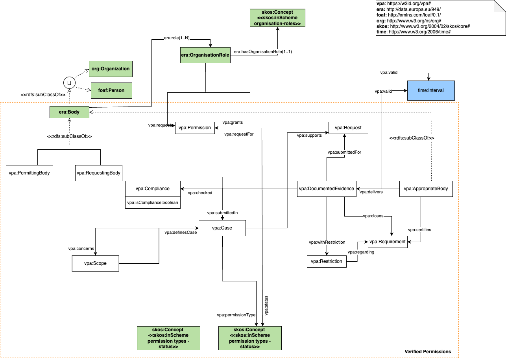

The Vechicle Permission (VP) and Vehicle Authorization (VA) ontology: Description back to ToC
ERA Ontology for permissions and vehicle authorisation
Figure 1 shows the main classes and properties of this vocabulary, which represent concepts related to the verified permissions
Figure 1. Conceptual model for the representation of the information related to verified permissions.